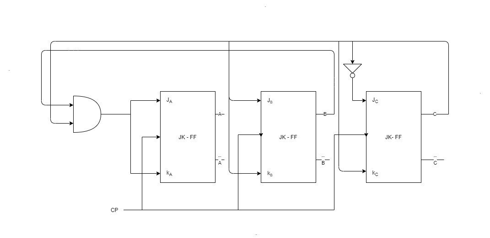

Chapter 1
-
Digital and Analog system
- Digital system
- Digital System are those systems that takes in a digital signal as input, process that and produce a digital output. Eg:- Computer, calculator, etc.
- They are represented in 0’s and 1’s.
- Analog system
- Analog System are those systems that takes in a analog signal as input, process that
and produce a analog output. Eg:-
amplifier, diode, etc - They are represented in the form of waves.
- Analog System are those systems that takes in a analog signal as input, process that
and produce a analog output. Eg:-
- Digital system
-
Difference between digital and analog
| Digital System | Analog System |
|---|---|
| Digital System are those systems that takes in a digital signal as input, process that and produce a digital output. | Analog System are those systems that takes in a analog signal as input, process that and produce a analog output. |
| They take digital signals as input. | They take analog signal as input. |
| They are stored in form of 0’s and 1’s | They are stored in the form of waves. |
| They are easy to generate and store in electronic devices. | They are not easy to store in electronic devices. |
| They can be reshaped. | They cann’t be reshaped. |
| Eg:- Computer, calculator, etc. | Eg:- amplifier, diode, etc |
Chapter 2
-
Number System
- Number System is a way of representing numbers in a format that is bind by certain rules.
- Types of number system used in computer
- Decimal
- In this number system we use the combination of numbers from 0 to 9 only.
- Hence it is also called as Base10
- Binary
- In this number system we use the combination of 0’s and 1’s only to represent numbers.
- Hence called Base2
- It is used by all the modern computers and electronic devices.
- Octal
- In this number system we use the combination of numbers from 0 to 4 only to represent numbers.
- Hence called Base5
- Hexadecimal
- In this number system we use the combination of numbers from 0 to 9 as in decimal and additional alphapets from A to F to represent numbers.
- Most of the modern computers use this number system.
- Hence called Base16
- Decimal
-
Conversion from one number system to another
- Decimal to Others
- Divide the decimal number with base of other number system
- Add the reminder of each step in a output list.
- Reverse the output list and we have the answer.
- Example:-
(120) to binary 120/2 = 60 [reminders 0] 60/2 = 30 [reminders 0,0] 30/2 = 15 [reminders 0,0,0] 15/2 = 7 [reminders 0,0,0,1] 7/2 = 3 [reminders 0,0,0,1,1] 3/2 = 1 [reminders 0,0,0,1,1,1] 1/2 = 0 [reminders 0,0,0,1,1,1,1] output = 0001111 Reverse it (120) = (1111000) // To convert to octal divide by 5 // To convert to hexadecimal divide by 16- *For Fractional Part
- Mulitply the fraction part by the base of the other number system.
- Add the non fraction part to the output list and continute with step 1 for atleast 3 times.
(120.375) to binary Non fractional part is same as above For fractional part 0.375*2 = 0.75 [output 1111000.0] 0.75*2 = 1.5 [output 11110000.01] 0.5*2 = 1 [output 11110000.011] - Others to Decimal
- Multiply each digit with the base of the number system.
- Give the base multiplier power starting from 0, from right.
- Example:-
(1111000) to decimal => 1*2+1*2+1*2+1*2+0*2+0*2+0*2 => 1*2^6+1*2^5+1*2^4+1*2^3+0*2^2+0*2^1+0*2^0 => 1*64+1*32+1*16+1*8+0*4+0*2+0*1 => 120- For fraction part
- Multiply each digit with 1/base of the number system
- Give power to the bases starting from 1 from left.
- add the answer to output list
(1111000.011) to decimal For non fraction part same as above For fraction part => 0*(1/2)+1*(1/2)+1*(1/2) => 0*(1/2^1)+1*(1/2^2)+1*(1/2^3) => 0*(1/2)+1*(1/4)+1*(1/8) => 0.375 answer = 120+0.375 = 120.375
- Decimal to Others
-
Radix and Diminished Radix complement
- Radix(
r's)- For a given number
Nin baserwithnnumber of digits, the r’s complement is defined as- rn - N
- Example:-
r's complement of (101100) here, r = 2; n = 6; N = 101100; 2's complement = r^n - N = 2^6 - 101100 = (64)base10 - 101100 = 1000000 - 101100 = 010100 - For a given number
- Diminished Radix(
(r-1)'s)- For a given number
Nin baserwithnnumber of digits andmnumber of digits after decimal point, the (r-1)'s complement is defined as- rn - r-m - N
- Example:-
(r-1)'s complement of (52520) here, r = 10; n = 5; m = 0; N = 52520; 9's complement = r^n - r^(-m) - N = 10^5 - 10^(-0) - 52520 = 100000 - 1 - 52520 = 47479 - For a given number
- Radix(
-
Subtraction with r’s complement
- Steps for subtraction with r’s compliment
- Find r’s complement of
Subtratend N - Add the result with
Minued M - If the sum yields carry
- Then simply discard it and remaining is answer
- If the sum doesn’t yield carry
- Then perform r’s complement of the result and add a negative sign
- Where in 10-5, 10 is Minued(M) and 5 is Subtratend(N)
- Find r’s complement of
- Example:-
subtract (1010100) - (1000100) using r's complement here M = (1010100); N = (1000100); r = 2; 2's complement of N = (0111011) + 1 = 0111100 Adding with M = (0111100) + (1010100) = 10010000 Since there is carry we discard it and answer is 0010000 // If there was no carry we had to find // the 2's complement of the answer and // add a negative sign - Steps for subtraction with r’s compliment
-
Subtraction with (r-1)'s complement
- Steps for subtraction with (r-1)'s compliment
- Find (r-1)'s complement of
Subtratend N - Add the result with
Minued M - If the sum yields carry
- Then discard the carry and add 1 to get the answer
- If the sum doesn’t yield carry
- Then perform (r-1)'s complement of the result and add a negative sign
- Where in 10-5, 10 is Minued(M) and 5 is Subtratend(N)
- Find (r-1)'s complement of
- Example:-
subtarct (3250) - (72532) using (r-1)'s complement here, M = 3250; N = 72532' r = 10; 9's complement of N = 10^5 - 10^(-0) - 72532 = 1000000 - 1 - 72532 = 27467 Adding with M = 3250+27467 = 30717 since no carry we take 9's complement of 30717 = 10^5 - 10^0 - 30717 = 100000 - 1 - 30717 = 69282 Now add negative sign and answer is (-69282) //If there was carry then discard the carry //Add one and we get the answer - Steps for subtraction with (r-1)'s compliment
-
Code
- Codes are the way of representing numbers, letters and symbols in digital electronics. As electronic devices only understand 0’s and 1’s we use different codes to convert the human readable characters and numbers into codes so that devices can understand it too.
- Use
- It is used make combination of 0’s and 1’s such that computers can understand the characters and numbers.
-
Types of Code
-
BCD code
- It is a weighted 4-bit binary number combination. It stands for Binary coded deciaml.
- A weighted code are those code where each bit of binary carries certain weight.
- There are different BCD codes, some of which are:-
8421 BCD,2421,84-2-1XS3etc
Decimal 8421 2421 84-2-1 XS3 0 0000 0000 0000 0011 1 0001 0001 0111 0100 2 0010 0010 0110 0101 3 0011 0011 0101 0110 4 0100 0100 0100 0111 5 0101 1011 1011 1000 6 0110 1100 1010 1001 7 0111 1101 1001 1010 8 1000 1110 1000 1011 9 1001 1111 1111 1100 -
Gray code
-
It is a reflected code system in which the next number have only one bit change such that it the new code doesn’t match any other codes
-
It is useful when converting analog information to digital information as only a bit is changed in every other code, there is less chances of errors.
-
Converting to Binary
- Write the first bit of the gray code same in the result binary code.
- Add the binary code bit with the next gray code.
- If carry comes discard the carry and simply write the answer bit in result binary code.
- If no carry simply write the answer to binary code.
- repeat until all bit in gray code is added
-
Binary to Gray
- Write the first bit of the binary code same in the result gray code.
- Add the 1st and 2nd binary bit
- If carry, discard the carry and write the answer to the result gray code.
- If no carry, simply write the answer to the result gray code.
- Repeat for 2nd and 3rd and so on until all bits are added.
-
-
Alphanumeric code
- In communation systems, the messages or information signals are represented by numbers, letters, symbols. This code is known as alphanumeric code.
- Some of the well known alphanumeric codes are:-
ASCII,Unicode,EBCDIC, etc
-
Instruction
- Instruction are the codes or commands given by the processor to different units of computer to perform certain task.
- They are coded for assembly language programming. Eg:-
ADD B,MOV A B, etc
-
Chapter 3
-
Boolean Algebra
- Boolean algebra is a algebra that is used for simplifying logical algebra.
- It is mostyle used to:-
- Minimize the number of logic gates
- Minimize the cost.
- Design logic circuit with only one logic gate.
- Reduce the propagation delay in the logic circuit.
-
Laws for boolean Algebra
- OR LAW
Operation output A+0 A A+1 1 A+A A A+~A 1 - AND LAW
Operation output A.0 0 A.1 A A.A 0 A.~A A - COMPLIMENT LAW
Operation output A ~A ~A A - COMMUTATIVE LAW
- A+(B+C) = (A+B)+C
- A.(B.C) = (A.B).C
- DISTRIBUTIVE LAW
- A.(B+C) = (A.B)+(A.C)
- A+(B.C) = (A+B).(A+C)
-
De-morgan’s Law
-
De-morgan’s 1st law
- The Product of complement is equal to the complement of sum.
~A.~B = ~(A+B)
A B ~A ~B A+B A.B ~(A+B) 0 0 1 1 0 1 1 0 1 1 0 1 0 0 1 0 0 1 1 0 0 1 1 0 0 1 0 0 -
De-morgan’s 22nd law
- The sum of complement is equal to the complement of product.
~(A.B) = ~A+~B
A B ~A ~B A.B A+B ~(A.B) 0 0 1 1 0 1 1 0 1 1 0 0 1 1 1 0 0 1 0 1 1 1 1 0 0 1 0 0
-
-
Logic Gates
-
They are the hardware or devices that produces output 0 or 1 depending upon the given inputs and the logic used.
-
They take one or more inputs and produce a single output.
-
Basic gates
-
AND
- It takes two inputs and perform a logical multiplication and produce an output.
The output is 1 only if both inputs are 1

- Truth table
A B A.B 0 0 0 0 1 0 1 0 0 1 1 1 -
OR
- It takes two inputs and perform a logical addition and produce an output.
The output is 0 only if both inputs are 0
- Truth table
A B A.B 0 0 0 0 1 1 1 0 1 1 1 1 -
NOT
- It takes one input and performs compliment of that number.
- Truth Table
A ~A 0 1 1 0
-
-
Derived gates
-
NAND
- It is a combination gate of AND and NOT gates. It takes 2 inputs put them through AND gate and the resut is run in the NOT gate.
The output is 0 only if both inputs are 1
- Truth Table
A B ~(A.B) 0 0 1 0 1 1 1 0 1 1 1 0 -
NOR
- It is a combination gate of OR and NOT gates. It takes 2 inputs put them through OR gate and the resut is run in the NOT gate.
The output is 1 only if both inputs are 0
- Truth Table
A B ~(A.B) 0 0 1 0 1 0 1 0 0 1 1 0 -
XOR
- Exclusive OR is a logical gate which has
output 1 if given inputs are differentandoutput is 0 if given inputs are same. - It is used for logical comparision.
- It is denoted by
A (+) Band given by formula~A.B+A.~B
- Truth Table
A B A (+) B 0 0 0 0 0 1 0 0 1 1 1 0 - Exclusive OR is a logical gate which has
-
XNOR
- Exclusive OR is a logical gate which has
output 0 if given inputs are differentandoutput is 1 if given inputs are same. - It is used for logical comparision.
- It is denoted by
A (.) Band given by formula~A.~B+A.B
- Truth Table
A B A (.) B 0 0 1 0 1 0 1 0 0 1 1 1 - Exclusive OR is a logical gate which has
-
-
-
Universal Gates
- Universal gates are those logical gates which can be to make basic as well as other logical gates using only that gate solely.
- The 2 universal gates are:-
-
NAND
-
A NAND gate can be used to make any other logical gates including Basic gates.
-
NAND as NOT
- By joining the two inputs of a NAND gate we can make a NAND gate work as NOT gate.
-
NAND as AND
- By using two NAND gates serially we can make a NAND gate work as AND gate.
-
NAND as OR
- By using two NAND gates paralley we can make a NAND gate work as a OR gate.
-
-
NOR
-
A NOR gate can be used to make any other logical gates including Basic gates.
-
NOR as NOT
- By joining the two inputs of a NOR gate we can make a NOR gate work as NOT gate.
-
NOR as AND
- By using two NOR gates paralley we can make a NOR gate work as AND gate.
-
NOR as OR
- By using two NOR gates serially we can make a NOR gate work as a OR gate.
-
-
Chapter 4
-
K-map
- K-map is a graphical method of simplification of boolean expression. It provides a
systematic method of simplifying boolean expression represented in
SOPandPOSform. - Rules for grouping in k-map
- Adjacent cell must differ by single variable and non-diagonal.
- The 1’s should be grouped to 1,2,4,8,16,etc
- Every 1 should be included in atlease one group, can be overlapping too.
- Number of groups must be minimized.
- For Pos form group the 0’s
- Example:-
-
Design logic circuit to implement the boolean function
-
F(A,B,C,D) = (1,3,7,11,15)F in bcd (0001,0011,0111,1011,1111)- K-map for F
~C ~D ~C D C D C ~D ~A ~B 1 1 ~AB 1 AB 1 A~B 1 F = ~A~BD + CD
-
- K-map is a graphical method of simplification of boolean expression. It provides a
systematic method of simplifying boolean expression represented in
-
Don’t care condition
- Don’t care condition is a condition in which the state of the input doesnot matter whether the input is 0 or 1 the output will be same.
- It is mostly useful while desigining a logic circuit as we can eliminate the don’t cares which we don’t need and use only which we need.
- Example:-
-
Design logic circuit to implement the boolean function
-
F(A,B,C,D) = (1,3,7,11,15) -
D(A,B,C,D) = (0,2,5)F in bcd (0001,0011,0111,1011,1111)D in bcd (0000, 0010, 0101)- K-map for F
~C ~D ~C D C D C ~D ~A ~B x=1 1 1 x=1 ~AB x=0 1 AB 1 A~B 1 F = ~A~B + CD
-
Chapter 5
-
Combinational Logic circuit
- Those logic circuit that are memoryless and the output of any instance depends solely upon the combination of the given inputs are called combinational logic circuit.
- They don’t have any feedback path.
-
Adder
-
Half Adder
- It is the binary adder used to add 2 bit binary digits.
- It takes two inputs and returns 2 outputs carry© and sum(s).
- Truth Table
A B S C 0 0 0 0 0 1 1 0 1 0 1 0 1 1 0 1 - As we can see
- Sum (s) =
~A.B+A.~B=A(+)B - Carry © =
A.B
- Sum (s) =
-
Full Adder
- It is the binary adder used to add 3 bit binary digits.
- It takes three inputs the third input being carry in(Cin) and returns 2 outputs carry out(cout) and sum(s).
- Truth Table
A B S C 0 0 0 0 0 1 1 0 1 0 1 0 1 1 0 1
-
-
Subtractor
-
Half Subtractor
- It is a binary subtractor used to subtract 2 bit binary digit.
- It takes 2 inputs and returns 2 outputs difference(d) and borrow(b)
- Truth Table
A B D Bo 0 0 0 0 0 1 1 1 1 0 1 0 1 1 0 0 - For Difference
D = A~B + ~AB = A xor B - For Borrow out
Bo = ~AB
-
Full Subtractor
- It is a binary subtractor used to subtract 3 bit binary digit.
- It takes 3 inputs third one being borrow in(bin) and returns 2 outputs difference(d) and borrow out(bout)
- Truth Table
A B Bin D Bout 0 0 0 0 0 0 0 1 1 1 0 1 0 1 1 0 1 1 0 1 1 0 0 1 0 1 0 1 0 0 1 1 0 0 0 1 1 1 1 1
-
-
Code Convertor
-
Code Convertor is a combinational logic circuit that is used to convert one code base to another code base.
-
It is useful when sending data or information from one system to another when both the system works in different code base.
-
BCD to Excess 3 convertor
- Truth table
Decimal A B C D W X Y Z 0 0 0 0 0 0 0 1 1 1 0 0 0 1 0 1 0 0 2 0 0 1 0 0 1 0 1 3 0 0 1 1 0 1 1 0 4 0 1 0 0 0 1 1 1 5 0 1 0 1 1 0 0 0 6 0 1 1 0 1 0 0 1 7 0 1 1 1 1 0 1 0 8 1 0 0 0 1 0 1 1 9 1 0 0 1 1 1 0 0 - Don’t care =
1010, 1011, 1100, 1101, 1110, 1111 - K-map W is
~C ~D ~CD CD C~D ~A ~B ~AB 1 1 1 AB x=1 x=1 x=1 x=1 A~B 1 1 x=1 x=1 W = A + BC + BD- K-map X is
~C ~D ~CD CD C~D ~A ~B 1 1 1 ~AB 1 AB x=1 x=0 x=0 x=0 A~B 1 x=1 x=1 X = ~BC + ~BD + B~C~D- K-map Y is
~C ~D ~CD CD C~D ~A ~B 1 1 ~AB 1 1 AB x=1 x=0 x=1 x=0 A~B 1 x=1 x=0 Y = ~C~D + CD = C xnor D- K-map Z is
~C ~D ~CD CD C~D ~A ~B 1 1 ~AB 1 1 AB x=1 x=0 x=0 x=1 A~B 1 x=0 x=1 Z = ~C~D + C~D = ~D(~C + C) = ~D
-
-
Parity generator and checker
-
When message and information is sent through one system to another through any means there maybe some loss of data or temper to data maybe done.
-
In order to detect that error(as the error cannot be reverted) we use an extra bit during the transmission of the information, that extra bit is known as parity bit.
-
There are 2 types of parity,
even paritywhere the number of 1’s is made even andodd paritywhere the number of 1’s is made odd. -
Parity Generator
- It is a combinational logic circuit that is used in the transmission side of the communication system where a extra parity bit is generated for each code.
-
Parity Checker
- It is a combinational logic circuit that is used in the receiving side of the communication system where the checking of the parity bit is done for error detection.
-
Example
Design a 3-bit odd parity generator and a checker for that.- We need are
3 bitsand since the parity generator is aodd parityso we add the parity such that thenumber 1's is odd. - Truth table for 3-bit odd parity generator is:-
A B C P(Parity bit) 0 0 0 1 0 0 1 0 0 1 0 0 0 1 1 1 1 0 0 0 1 0 1 1 1 1 0 1 1 1 1 0 - K-map for P is
~B ~C ~BC BC B ~C ~A 1 1 A 1 1 P = ~A~B~C + ~ABC + A~BC + AB~C = ~A(~B~C + BC) + A(~BC + B~C) = ~A(B xnor C) + A(B xor C) = ~A~(B xor C) + A(B xor C) = A xnor B xor C- For the checker we need
4-bitas the inputs and a parity bit that checks for errors. Same as the generator we addP-bitsuch that thenumber of 1's is odd. - The truth table for checker is:-
A B C P CH(Parity checker) 0 0 0 0 1 0 0 0 1 0 0 0 1 0 0 0 0 1 1 1 0 1 0 0 0 0 1 0 1 1 0 1 1 0 1 0 1 1 1 0 1 0 0 0 0 1 0 0 1 1 1 0 1 0 1 1 0 1 1 0 1 1 0 0 1 1 1 0 1 0 1 1 1 0 0 1 1 1 1 1 - K-map for CH is
~C ~P ~CP CP C ~P ~A ~B 1 1 ~AB 1 1 AB 1 1 A~B 1 1 CH = ~A~B~C~P + ~A~BCP + ~AB~CP + ~ABC~P + AB~C~P + ABCP + A~B~CP + A~BC~P = A xnor B xnor C xnor P
-

Chapter 7
-
FlipFlops
- It is a basi unit of memory which store either 1 or 0(1-bit information). It has two outputs and 1 or more inputs.
-
RS-FlipFlop
- RS-FF stands Reset-Set flipflop.
- Excitation table
Q(t) Q(t+1) S R 0 0 0 x 0 1 1 0 1 0 0 1 1 1 x 0 -
JK-FlipFlop
- JK flipflop is a rifinement of RS FF. Here the invalid state of RS FF is defined.
- Excitation table
Q(t) Q(t+1) J K 0 0 0 x 0 1 1 x 1 0 x 1 1 1 x 0 -
T-FlipFlop
- T-FF stands for toggle flipflop.
- Excitation table
Q(t) Q(t+1) T 0 0 0 0 1 1 1 0 1 1 1 0 -
D-FlipFlop
- D-FF stands for Data-flipflop or Delay-flipflop. It is made by using a
NOT gateat theR input of RS FF

- Excitation table
Q(t) Q(t+1) D 0 0 0 0 1 1 1 0 0 1 1 1 - D-FF stands for Data-flipflop or Delay-flipflop. It is made by using a
-
Master-slave-FlipFlop
- A master-slave flipflop can be constructed with either 2 JK-FF or 2 RS-FF. In either case one of the flipflop serve as master flipflop and another serve as slave flipflop.
- A invertor is used to compliment the clock signal for second/slave flipflop.
- When the clock signal is 1 the master ff is active and input is fed to the J and K terminal of master ff and slave ff is passive.
- When the clock signal is 0 the slave ff is active and output if master ff is fed to the J and K terminal of slave ff, also master ff is passive.
Chapter 8
-
Register
- Register is a memory element for holding binary information. A group of flipflop makes a register. A n-bit register has a group of n-flipflops.
-
Shift Register
- A register which is capable of shifting its binary information either to left or right is called a shift register.
- There are four types of shift registers:-
-
Serial In Serial Out (SISO) shift register
- It is the shift register that takes in input bits serially i.e one bit at a time on a single line also produces output serially.

-
Considering a 4-bit SISO, and input bits 1010
- At CP 1, Q0 = 0
- At CP 2, Q0 = 1, Q1 = 0
- At CP 3, Q0 = 0, Q1 = 1, Q2 = 0
- At CP 4, Q0 = 1, Q1 = 0, Q2 = 1, Q3 = 0
- At CP 5, Q1 = 1, Q2 = 0, Q3 = 1
- At CP 6, Q2 = 1, Q3 = 0
- At CP 7, Q3 = 1
-
Parallel In Parallel Out (PIPO) shift register
- It is the shift register that takes data inputs simultaneously at same time and produces the output bits parallelly too.
-
Considering a 4-bit PIPO, and input bits 1010
- D0 = 1, D1 = 0, D2 = 1, D3 = 0
- At CP 4, Q0 = 1, Q1 = 0, Q2 = 1, Q3 = 0
-
Serial In Parallel Out (SIPO) shift register
- It is the shift register that takes data inputs serially one at a time but gives the output bits simultaneously.
-
Considering a 4-bit SIPO, and input bits 1010
- At CP 1, Q0 = 0
- At CP 2, Q0 = 1, Q1 = 0
- At CP 3, Q0 = 0, Q1 = 1, Q2 = 0
- At CP 4, Q0 = 1, Q1 = 0, Q2 = 1, Q3 = 0

-
Parallel In Serial Out (PISO) shift register
- It is the shift register that takes input bits parallelly at the same time but gives the output serially one at a time.
-
Considering a 4-bit PISO, and input bits 1010
- At CP 1, Q0 = 1, Q1 = 0, Q2 = 1, Q3 = 0
- At CP 2, Q1 = 0, Q2 = 1, Q3 = 0
- At CP 3, Q2 = 1, Q3 = 0
- At CP 4, Q3 = 0
-
-
Counter
- It is a sequential device made up of group of flipflops that are connected together to perform counting operation.
- It is of 2 types:-
- Asynchronous counter
- It is the type of counter where the timing for clock pulse for each flipflop is different, i.e the first flipflop is given the external clock pulse, and then each successive flipflop is clocked by output of preceding flipflop.
- It is also called as ripple counter
- Synchronous counter
- It is the type of counter where the timing for clock pulse for each flipflop is same, i,e every flipflop is given the same external clock pulse at the same time.
- Asynchronous counter
-
Synchronous up counter using JK FF
- The diagram of the counter looks like:-
- Excitation table for the counter is:-
At Bt Ct At+1 Bt+1 Ct+1 JA KA JB KB JC KC 0 0 0 0 0 1 0 x 0 x 1 x 0 0 1 0 1 0 0 x 1 x x 1 0 1 0 0 1 1 0 x x 0 1 x 0 1 1 1 0 0 1 x x 1 x 1 1 0 0 1 0 1 x 0 0 x 1 x 1 0 1 1 1 0 x 0 1 x x 1 1 1 0 1 1 1 x 0 x 0 1 x 1 1 1 0 0 0 x 1 x 1 x 1 - Note: When making k-map look at the inputs with t
- Now K-Map for JA
\ ~C C ~A ~B ~AB 1 AB x x=1 A~B x x - JA = BC
- Now K-Map for JB
\ ~C C ~A ~B 1 ~AB x x=1 AB x x=1 A~B 1 - JB = C
- Now K-Map for JC
\ ~C C ~A ~B 1 x ~AB 1 x AB 1 x A~B 1 x - JC = ~C
- Now K-Map for KA
\ ~C C ~A ~B x x ~AB x x=1 AB 1 A~B x - KA = BC
- Now K-Map for KB
\ ~C C ~A ~B x x=1 ~AB 1 AB 1 A~B x x=1 - KB = C
- Now K-Map for KC
\ ~C C ~A ~B x 1 ~AB x 1 AB x 1 A~B x 1 - KC = C

-
Asynchronous down counter using T FF
- The diagram of the counter looks like:-
- Excitation table for the counter is:-
At Bt Ct At+1 Bt+1 Ct+1 TA TB TC 1 1 1 1 1 0 0 0 1 1 1 0 1 0 1 0 1 1 1 0 1 1 0 0 1 0 1 1 0 0 0 1 1 0 1 1 0 1 1 0 1 0 1 0 1 0 1 0 0 0 1 0 1 1 0 0 1 0 0 0 0 0 1 0 0 0 1 1 1 1 1 1 - Note: When making k-map look at the inputs with t
- Now K-Map for TA
\ ~C C ~A ~B 1 ~AB 1 AB A~B 1 - TA = ~A ~B ~C + ~ABC + A ~BC = ~A ~B ~C + C(A xor B)
- Now K-Map for TB
\ ~C C ~A ~B 1 ~AB 1 AB 1 A~B 1 - TB = ~C
- Now K-Map for TC
\ ~C C ~A ~B 1 1 ~AB 1 1 AB 1 1 A~B 1 1 - TC = 1
Difference between
-
Latch and Flipflops
| Latch | FlipFlop |
|---|---|
| It is a sequential logic circuit that is used to store binary information made using logic gates. | It is a sequential logic circuit used to store binary information made using latch and clock signals. |
| It is based on level triggering approach. | It is based on edge triggering approach. |
| It is complex to implement and has faster operation speed. | It is easy to implement and has slower operation speed compared to latch. |
| The operation depends on present, past input and past output values. | The operations depends on present, past input and past output values along with clock pulse. |
-
Synchronous and asynchronous counter
| Synchronous Counter | Asynchronous Counter |
|---|---|
| In synchronous counter, all flip flops are triggered with same clock simultaneously. | In asynchronous counter, different flip flops are triggered with different clock, not simultaneously. |
| Synchronous Counter is faster than asynchronous counter in operation. | Asynchronous Counter is slower than synchronous counter in operation. |
| Synchronous Counter will operate in any desired count sequence. | Asynchronous Counter will operate only in fixed count sequence (UP/DOWN). |
| Synchronous Counter designing as well implementation are complex due to increasing the number of states. | Asynchronous Counter designing as well as implementation is very easy. |
-
Combinational and Sequential circuit
| Combinational Circuit | Sequential Circuit |
|---|---|
| The logic circuits that depends upon the present input values only to determine the output of the instance are called combinational logic circuit. | The logic circuits that depends upon the present input values as well as past output values for determining the output of the instance are called sequential logic circuit. |
| It does not have any feedback path as well as memory elements. | It has both feedback path and memory elements. |
| The operations doesn’t depend on clock transition. | The operations depend on clock transition. |
| The circuit are easy to implement and can be described using truth table. | The circuit are harder to implement compared to combinational and can be described using truth table as well as timing diagram. |
| Example: Adder, Encoder, etc. | Example: Latch, flipflop, counter, etc |